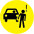

Please zoom in and select an intersection.
- Pedestrian crash corridors (top 10% of streets in each borough)
- Pedestrian fatality (2009-14)
- Major arterial roads
We're gathering feedback on these safety conditions:
- Not enough time to cross
- Double parking
- Long wait to cross
- Red light running
- Jaywalking
- Poor visibility
- Speeding
- Long distance to cross
-  Failure to yield
- Cyclist behavior